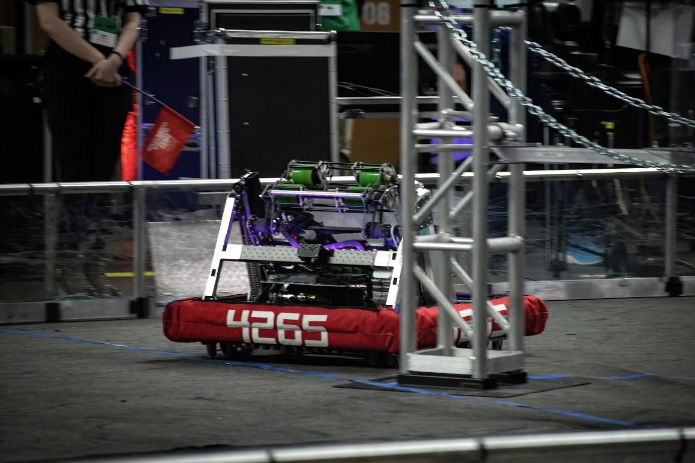
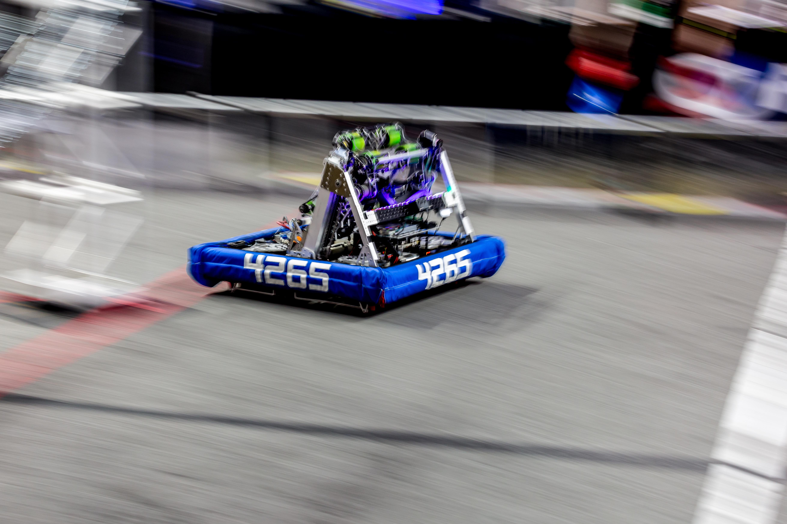

Key Mechanisms
- Shifting swerve drivetrain - the 2-speed swerve modules, giving the robot both a high-torque low gear and an 18 ft/s cycling gear.
- 2-sided intake - game pieces can be acquired from either side of the mechanism, cutting alignment time during cycles.
- 2-stage cascading elevator - a compact lift package that extends to scoring height while staying inside the starting envelope.

Design & Manufacturing
The robot was designed in Fusion 360 and manufactured in-house. The parts mix spans the full range of shop processes: CNC mill and CNC lathe for precision structural and drivetrain components, water jet and fiber laser cutter for plate work, and both SLS and FDM 3D printing for complex geometry and fast-turnaround parts.